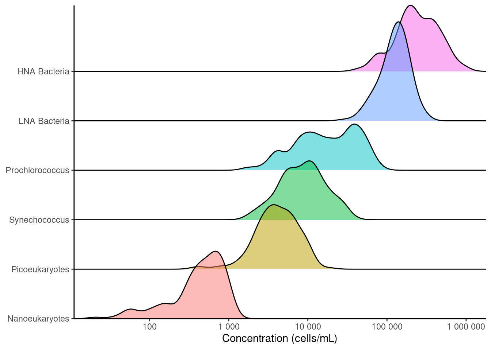
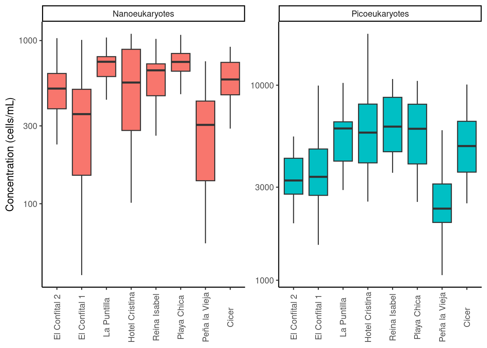
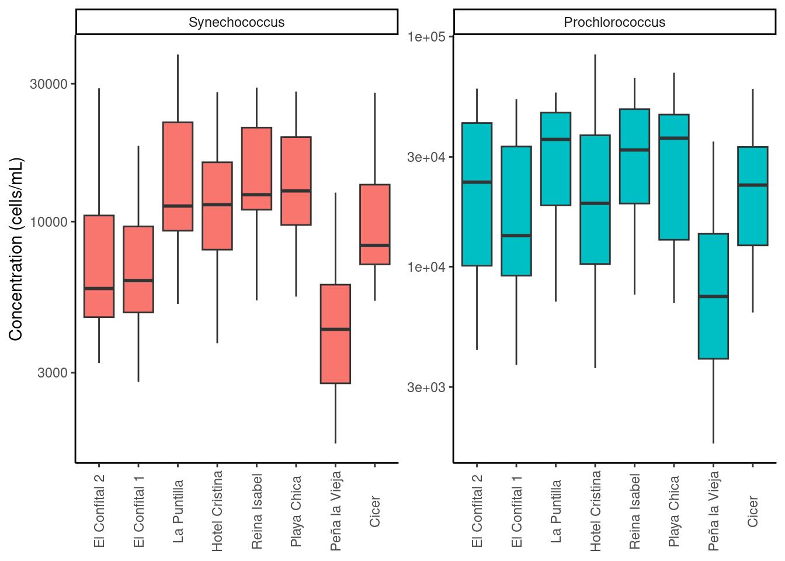
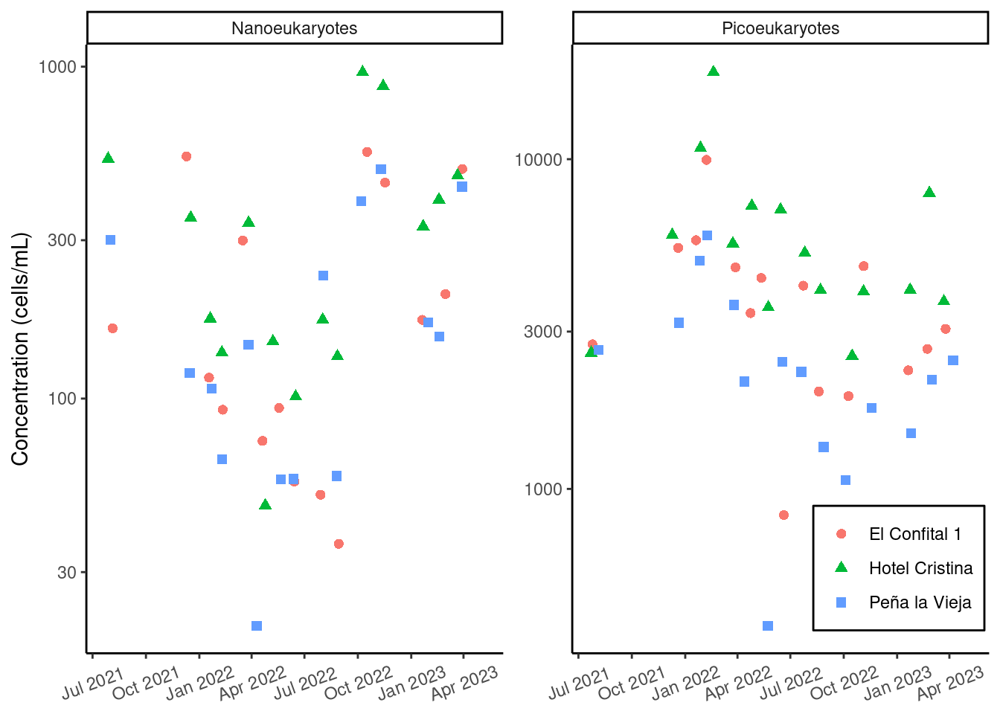
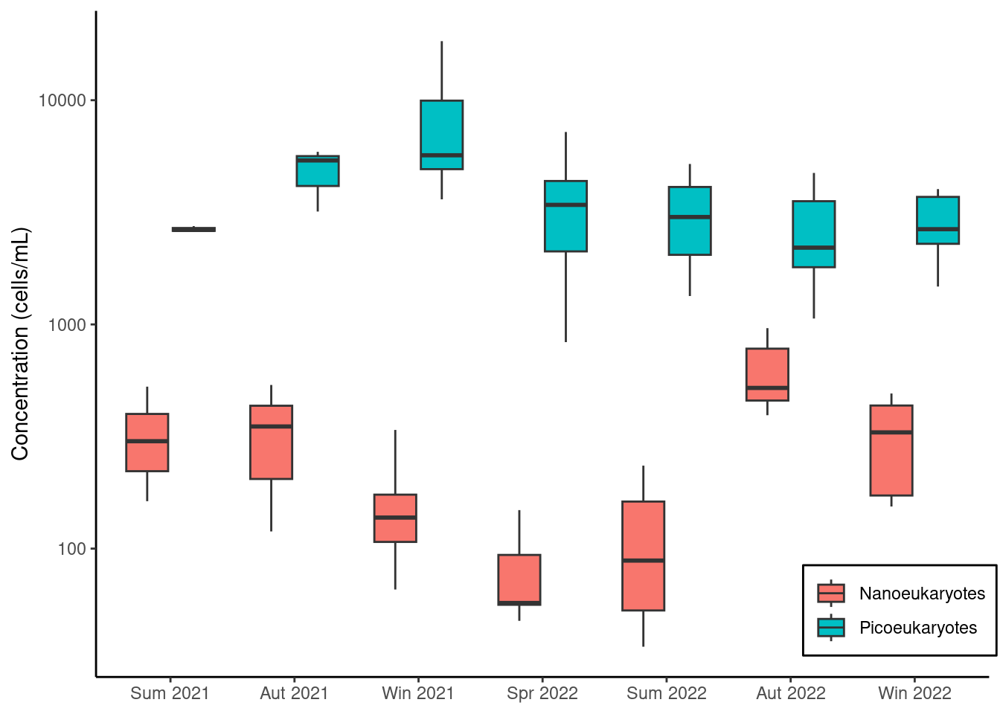
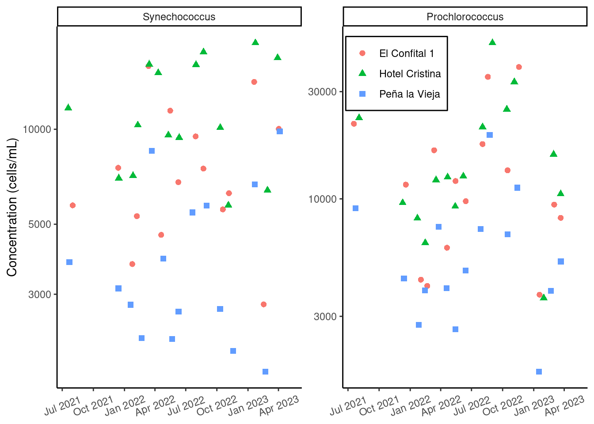
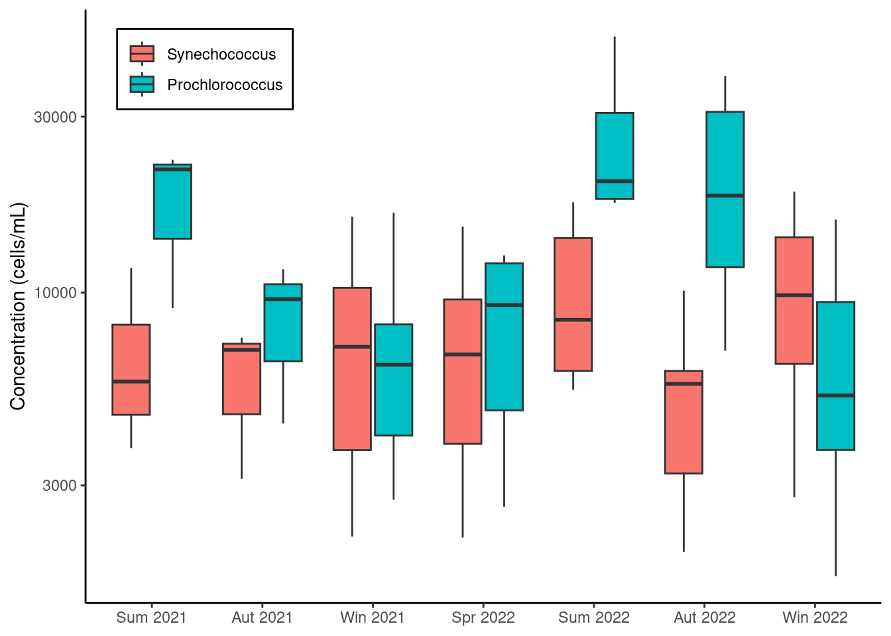
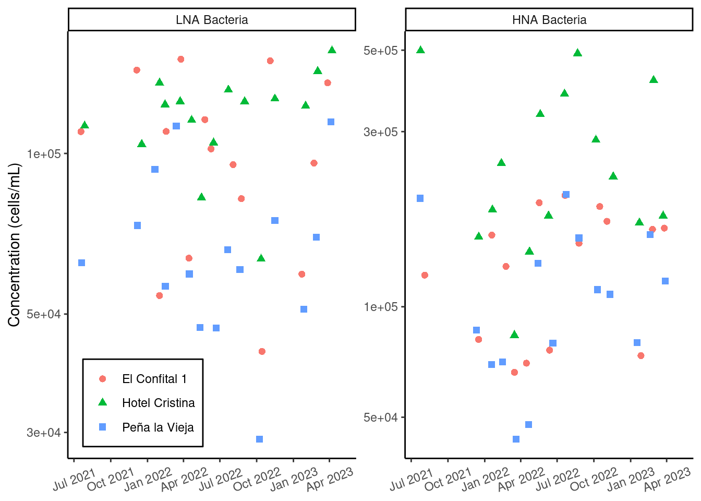
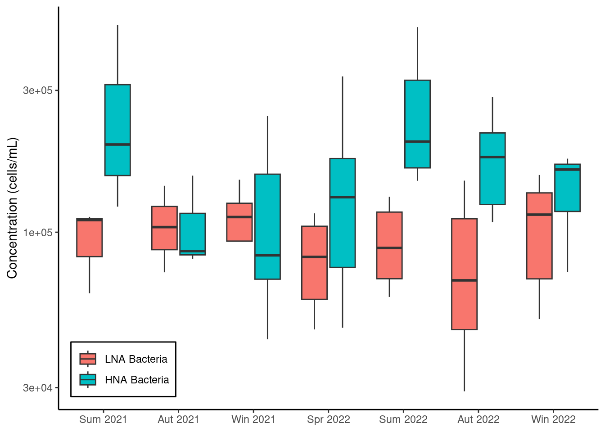

Cytometry
Cytometry enable us to quantitatively measure cellular concentration based on cytometric parameters like cell size, color, morphology and DNA content. This technology was developed in the field of human medicine and is now applied to marine sciences for microplankton counting and characterization. In this project, we classified cell types in three groups:
- Eukaryotic (size criteria): Nanoeukaryotes, and picoeukaryotes.
- Cyanobacteria (pigment criteria): Prochlorococcus, and Synechococcus genuses.
- DNA (content criteria): High nucleic acid (HNA), and low nucleic acid (LNA).
1 How much of each microplankton group was there?

2 How did cellular concentration vary locally?
For all cellular types, we measured an overall lower concentration in Peña la Vieja than in the rest of stations. Also, we distinguish a gap between Las Canteras and El Confital, being the latter generally lower. The gap is more significant in Confital 1 than in Confital 2, specially so for nanoeukaryotes and HNA Bacteria.



3 How did cellular concentration vary over time?
Figure 6 shows minimum eukaryotic cell count during the spring 2022. Values tend to decrease between January 2022 and October 2022 for both eukaryotic sizes. However, this tendency is not symmetrical between nano and picoeukaryotes. As observed in Figure 7, picoeukaryotic concentration is stable after summer 2022 whereas nanoeukaryotic increased drastically in autumn 2022. In Figure 8 we observe the minimum at Peña la Vieja during late winter 2022. At El Confital 1, Synechoccocus count fell to a minimum, while Prochlorococcus remained at middle values. Figure 9 shows a decoupling between the otherwise highly correlated concentrations of both genuses. When seasonal variation is considered (Figure 10), we registered minimum values in spring 2022 for HNA. Contrarily, the minimum for LNA happened before, in autumn 2022. This inverse correlation between HNA and LNA can be better observed in Figure 11. There is an evident opposing tendency between HNA and LNA cells due to their reproductive strategies. It has been proposed by Santos et al. (2019) that HNA bacteria flourish during fecal contamination events. This could be the case at hand during summer 2022, when we observed maximum values for HNA.






References
Santos, Martha, Helena Oliveira, Joana L. Pereira, Mário J. Pereira, Fernando J. M. Gonçalves, and Tânia Vidal. 2019. “Flow Cytometry Analysis of Low/High DNA Content (LNA/HNA) Bacteria as Bioindicator of Water Quality Evaluation.” Ecological Indicators 103: 774–81. https://doi.org/10.1016/j.ecolind.2019.03.033.